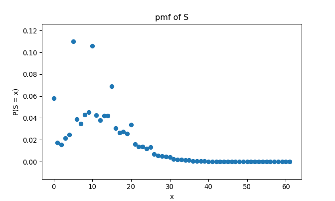

The following Python packages/functions are used:
from datetime import datetime as dt
from matplotlib import pyplot as plt
import numpy as np
from scipy.optimize import fminThis note is a continuation from Evaluating a hard-to-evaluate pmf using pgf and DFT under 2018: Statistical Computation.
1. Introduction
This note concerns with a replication of R functions written in the previous note. Four functions — dX, csum_N, dpmf, and rpmf — will be written in Python, and the same plots will be produced using matplotlib.pyplot.
2. The Four
Details of the following four functions are written in the previous note.
First, dX:
npmap = lambda func, *iterable: np.array(list(map(func, *iterable)))
def dX(x):
'''(number or *iterable) -> number or np.array
Return the probability assigned for x, defined by the following pmf:
p(0) = .05, p(1) = p(3) = p(4) = .1, p(2) = .075, p(5) = .575,
and p(x) = 0 otherwise.
>>> dX(0)
0.05
>>> dX([2, 5])
array([0.075, 0.575])
>>> dX(np.array([-1, 0, 4]))
array([0. , 0.05, 0.1 ])
'''
def pX(d):
if d == 0:
return .05
elif d in [1, 3, 4]:
return .1
elif d == 2:
return .075
elif d == 5:
return .575
else:
return 0
if not hasattr(x, '__iter__'):
return pX(x)
return npmap(pX, x)To code csum_N, we require a fft-equivalent in Python. I will use np.fft.fft() and np.fft.ifft().real. Also, the word lambd is used instead of lambda, since the keyword lambda is used for anonymous functions in Python:
def csum_N(pmf, support, lambd, eps = 1e-05):
'''(function, np.array, number[, float]) -> np.array
Preconditions:
1. pmf is a pmf of X_i where the random summation S = X_1 + ... + X_N
with N ~ Pois(lambd) has 0, 1, ..., M - 1 as the first M element of
its support.
2. pmf is a function whose output is np.array whenever the input is
np.array.
3. support == np.arange(0, l + 1), where l is the largest number of
the support of pmf.
4. lambd > 0
5. 0 < eps < 1
Return the approximate probability mass function of S, i.e.
P(S = x | S < M) for some appropriate integer M determined by
P(S >= M) < eps, where S is the sum of iid X_i's with
i = 1, ..., N ~ Pois(lambd), X_i ~ pmf, and X_i's support is
a subset of np.arange(0, l + 1) (= support) with l being the largest
element of X_i's support.
>>> def dY(y):
... def pY(d):
... if d in [1, 4]:
... return .25
... elif d == 2:
... return .5
... else:
... return 0
... if not hasattr(y, '__iter__'):
... return pY(y)
... return npmap(pY, y)
...
>>> result_Y = csum_N(dY, np.arange(0, 5), 3)
>>> M_Y = len(result_Y)
>>> print(M_Y, sum(result_Y))
39 0.9999999999999998
>>> result_Y[0:4]
array([0.04978729, 0.03734044, 0.08868328, 0.05951115])
'''
pmf_vec = pmf(support)
# Define the pgf of X_i
g = lambda t: npmap(lambda d: sum(d ** support * pmf_vec), t)
# Find M
Ms = lambda t: (-lambd * (1 - g(t)) - np.log(eps)) / np.log(t)
M = np.ceil(fmin(Ms, 1.001, full_output = True, disp = False)[1])
# Append 0's
pmf_vec = np.append(pmf_vec, np.zeros(int(M - len(pmf_vec))))
# Apply DFT and inverse DFT
gtks = np.fft.fft(pmf_vec)
gS_gtks = np.exp(-lambd * (1 - gtks))
pS_tks = np.fft.ifft(gS_gtks).real
return pS_tksLet’s check if it works the same as in R:
## 62 1.0000000000000002## <matplotlib.collections.PathCollection object at 0x00000181CA0B9940>## Text(0.5, 1.0, 'pmf of S')## Text(0.5, 0, 'x')## Text(0, 0.5, 'P(S = x)')
Yes it does.
dpmf is written as follows:
def dpmf(x, pmf_vec, support_vec = None):
'''(object or *iterable, *iterable[, *iterable]) -> number or np.array
Preconditions:
1. Elements of x are of the same type as elements of support_vec,
if support_vec is specified. If support_vec is not specified, then
x must be a number or an iterable object with numeric elements.
2. sum(pmf_vec) == 1
3. len(pmf_vec) == len(support_vec) if support_vec is specified.
4. If support_vec is specified, then each element of support_vec
must be hashable, i.e. element.__hash__ is not None
Return the probability evaluated at each element of x based on
probabilities in pmf_vec and elements of support_vec if support_vec
is specified (each element of support_vec is the input that corresponds
to the probability in pmf_vec). If not specified, then support_vec will
be replaced with np.arange(0, len(pmf_vec)).
>>> # Example 1
>>> pmf_eg1 = [0.25, 0.5 , 0.25]
>>> support_eg1 = np.array([1, 2, 4])
>>> dpmf(1, pmf_eg1, support_eg1)
0.25
>>> dpmf([3, 4, 6], pmf_eg1, support_eg1)
array([0. , 0.25, 0. ])
>>> dpmf(np.array([3, 4, 6]), pmf_eg1, support_eg1)
array([0. , 0.25, 0. ])
>>>
>>> # Example 2
>>> pmf_eg2 = (.25, .4, .35)
>>> support_eg2 = ['apple', 'orange', 'neither']
>>> dfruit = lambda x: dpmf(x, pmf_eg2, support_eg2)
>>> dfruit(['apple', 'neither'])
array([0.25, 0.35])
>>> dfruit('orange')
0.4
>>> dfruit(np.array(['orange', 'hello']))
array([0.4, 0. ])
'''
M = len(pmf_vec)
if support_vec is None:
support_vec = np.arange(0, M)
D = {}
for i in range(len(support_vec)):
D[support_vec[i]] = pmf_vec[i]
finder = lambda d: D[d] if d in D.keys() else 0
if hasattr(x, '__iter__'):
if type(x) == str:
return finder(x)
return npmap(finder, x)
return finder(x)And finally, rpmf:
def rpmf(n, pmf, support, **kwargs):
'''(int, function, *iterable[, **kwargs]) -> np.array
Precondition:
1. n >= 1
2. support is the support of pmf.
Return n random samples from the specified pmf with support 'support'
and additional arguments of pmf in **kwargs if required. Since this
function uses **kwargs, any additional arguments of pmf you want to
specify must be named.
>>> # Example 1: dX
>>> np.random.seed(1024)
>>> rpmf(n = 20, pmf = dX, support = np.arange(0, 6))
array([5, 5, 5, 5, 5, 5, 1, 0, 1, 5, 5, 5, 5, 3, 5, 5, 5, 2, 5, 1])
>>>
>>> # Example 2: S_Y = Y_1 + ... + Y_N
>>> np.random.seed(1024)
>>> result_S_Y = csum_N(dY, np.arange(0, 5), 3) # in csum_N example
>>> result_S_Y = result_S_Y / sum(result_S_Y)
>>> M_S_Y = len(result_S_Y)
>>> rpmf(10, dpmf, np.arange(0, M_S_Y), pmf_vec = result_S_Y)
array([ 8, 22, 6, 8, 7, 9, 2, 0, 2, 9])
>>>
>>> # Example 3: dfruit in dpmf example
>>> np.random.seed(2048)
>>> rpmf(7, dfruit, ['apple', 'orange', 'neither'])
array(['orange', 'apple', 'neither', 'neither', 'neither', 'orange',
'apple'], dtype='<U7')
'''
cmf_vec = np.append(0, np.cumsum(pmf(support, **kwargs)))
unif_01 = np.random.random(n)
result = []
for k in range(n):
for j in range(len(cmf_vec) - 1):
if unif_01[k] >= cmf_vec[j] and unif_01[k] < cmf_vec[j + 1]:
result.append(support[j])
return np.array(result)As we did previously, let’s generate 10,000 samples of \(S = \sum_{i = 1}^{N} X_i\) and draw the histogram:
np.random.seed(2048)
start_py = dt.now()
samples_N = rpmf(10000, dpmf, np.arange(0, M), pmf_vec = result)
end_py = dt.now()
plt.clf()
bins = np.arange(-.5, M + 1.5, step = 1)
plt.hist(samples_N, bins = bins, density = True)To compare the histogram and the actual pmf, we superimpose two plots as follows:
rpmf comparison with its R equivalent
It takes
## '0:00:00.833220'seconds to generate 10,000 samples of \(S = \sum_{i = 1}^{N} X_i\). In R, it takes:
set.seed(2048)
start_r <- Sys.time()
samples_N <- rpmf(10000, dpmf, 0:(M - 1), result)
end_r <- Sys.time()
end_r - start_r## Time difference of 25.58828 secsUnlike what happened in Imputation using EM: Python implementation, Python is significantly faster than R this time. It is evident that a nested for-loop in R, or for-loop in general, is slower than in Python.
You can download the Python script for these functions here. Examples within docstrings are tested with doctest framework.
Session info
R session info:
## R version 3.6.1 (2019-07-05)
## Platform: x86_64-w64-mingw32/x64 (64-bit)
## Running under: Windows 10 x64 (build 18362)
##
## Matrix products: default
##
## locale:
## [1] LC_COLLATE=English_Canada.1252
## [2] LC_CTYPE=English_Canada.1252
## [3] LC_MONETARY=English_Canada.1252
## [4] LC_NUMERIC=C
## [5] LC_TIME=English_Canada.1252
##
## attached base packages:
## [1] stats graphics
## [3] grDevices utils
## [5] datasets methods
## [7] base
##
## other attached packages:
## [1] dplyr_0.8.3
## [2] reticulate_1.13
## [3] pROC_1.15.3
## [4] ggrepel_0.8.1
## [5] ggplot2_3.2.1
## [6] funpark_0.2.6
## [7] data.table_1.12.6
## [8] boot_1.3-22
## [9] rmarkdown_1.17
## [10] magrittr_1.5
## [11] itertools2_0.1.1
##
## loaded via a namespace (and not attached):
## [1] prettydoc_0.3.1
## [2] tidyselect_0.2.5
## [3] xfun_0.11
## [4] purrr_0.3.3
## [5] lattice_0.20-38
## [6] colorspace_1.4-1
## [7] vctrs_0.2.0
## [8] htmltools_0.4.0
## [9] yaml_2.2.0
## [10] utf8_1.1.4
## [11] rlang_0.4.2
## [12] pillar_1.4.2
## [13] glue_1.3.1
## [14] withr_2.1.2
## [15] lifecycle_0.1.0
## [16] plyr_1.8.4
## [17] stringr_1.4.0
## [18] munsell_0.5.0
## [19] gtable_0.3.0
## [20] evaluate_0.14
## [21] labeling_0.3
## [22] knitr_1.26
## [23] fansi_0.4.0
## [24] Rcpp_1.0.3
## [25] readr_1.3.1
## [26] scales_1.1.0
## [27] backports_1.1.5
## [28] jsonlite_1.6
## [29] farver_2.0.1
## [30] png_0.1-7
## [31] hms_0.5.2
## [32] digest_0.6.23
## [33] stringi_1.4.3
## [34] grid_3.6.1
## [35] cli_1.1.0
## [36] tools_3.6.1
## [37] lazyeval_0.2.2
## [38] tibble_2.1.3
## [39] crayon_1.3.4
## [40] tidyr_1.0.0
## [41] pkgconfig_2.0.3
## [42] zeallot_0.1.0
## [43] ellipsis_0.3.0
## [44] Matrix_1.2-17
## [45] xml2_1.2.2
## [46] assertthat_0.2.1
## [47] rstudioapi_0.10
## [48] iterators_1.0.12
## [49] R6_2.4.1
## [50] compiler_3.6.1Python session info:
## -----
## matplotlib 3.1.1
## numpy 1.17.0
## scipy 1.1.0
## -----
## Python 3.7.2 (tags/v3.7.2:9a3ffc0492, Dec 23 2018, 23:09:28) [MSC v.1916 64 bit (AMD64)]
## Windows-10-10.0.18362-SP0
## 4 logical CPU cores, Intel64 Family 6 Model 78 Stepping 3, GenuineIntel
## -----
## Session information updated at 2020-01-12 22:46